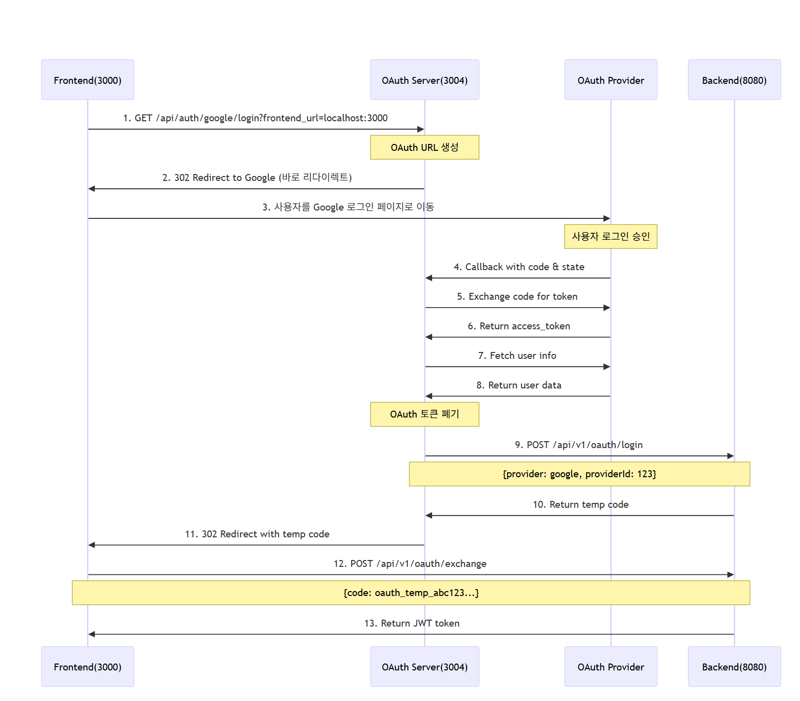

Next.js 15.3.3 기반의 OAuth 인증 중간 서버입니다. 프론트엔드와 백엔드 사이에서 OAuth 인증 플로우를 처리합니다.
GET /api/auth/google/login?frontend_url={url}
매개변수:
frontend_url: 인증 완료 후 리다이렉트할 프론트엔드 URL (선택사항)응답 예시:
{
"authUrl": "https://accounts.google.com/oauth/authorize?...",
"message": "Google OAuth URL generated successfully"
}
GET /api/auth/kakao/login?frontend_url={url}
매개변수:
frontend_url: 인증 완료 후 리다이렉트할 프론트엔드 URL (선택사항)응답 예시:
{
"authUrl": "https://kauth.kakao.com/oauth/authorize?...",
"message": "Kakao OAuth URL generated successfully"
}
GET /api/auth/google/callback?code={code}&state={state}
Google OAuth 제공자로부터의 콜백을 처리합니다. 자동으로 프론트엔드로 리다이렉트됩니다.
GET /api/auth/kakao/callback?code={code}&state={state}
Kakao OAuth 제공자로부터의 콜백을 처리합니다. 자동으로 프론트엔드로 리다이렉트됩니다.
OAuth 콜백 처리 과정:
/auth/callback 경로로 리다이렉트POST /api/auth/verify
요청 본문:
{
"token": "eyJhbGciOiJIUzI1NiIsInR5cCI6IkpXVCJ9..."
}
응답 예시 (성공):
{
"valid": true,
"user": {
"id": "12345",
"email": "user@example.com",
"name": "사용자명"
},
"expiresAt": "2024-12-31T23:59:59Z"
}
POST /api/auth/refresh
요청 본문:
{
"refreshToken": "eyJhbGciOiJIUzI1NiIsInR5cCI6IkpXVCJ9..."
}
응답 예시:
{
"success": true,
"accessToken": "eyJhbGciOiJIUzI1NiIsInR5cCI6IkpXVCJ9...",
"refreshToken": "eyJhbGciOiJIUzI1NiIsInR5cCI6IkpXVCJ9...",
"expiresIn": 3600,
"tokenType": "Bearer"
}
npm install
# 또는
yarn install
# 또는
pnpm install
.env.local 파일을 생성 후 다음 변수들을 설정하세요:
# ===== 필수 환경변수 =====
# Google OAuth 설정 (Google Cloud Console에서 발급)
GOOGLE_CLIENT_ID=your_google_client_id
GOOGLE_CLIENT_SECRET=your_google_client_secret
# Kakao OAuth 설정 (Kakao Developers에서 발급)
KAKAO_CLIENT_ID=your_kakao_client_id
KAKAO_CLIENT_SECRET=your_kakao_client_secret
# OAuth 공통 설정 (각 제공자별로 다른 콜백 URL)
# Google: http://localhost:3004/api/auth/google/callback
# Kakao: http://localhost:3004/api/auth/kakao/callback
# 서버 URL 설정
BACKEND_SERVER_URL=http://localhost:8000 # 백엔드 API 서버 주소
FRONTEND_URL=http://localhost:3001 # 프론트엔드 앱 주소
# ===== 선택적 환경변수 =====
# CORS 설정 (기본값: FRONTEND_URL 사용)
CORS_ORIGIN=http://localhost:3001 # CORS 허용 도메인
# OAuth 제공자 도메인 (쉼표로 구분, 설정하지 않으면 OAuth 제공자 요청 차단)
OAUTH_PROVIDER_DOMAINS=https://accounts.google.com,https://oauth2.googleapis.com,https://www.googleapis.com,https://kauth.kakao.com,https://kapi.kakao.com
| 변수명 | 필수여부 | 설명 |
|---|---|---|
GOOGLE_CLIENT_ID |
✅ 필수 | Google OAuth 클라이언트 ID |
GOOGLE_CLIENT_SECRET |
✅ 필수 | Google OAuth 클라이언트 시크릿 |
KAKAO_CLIENT_ID |
✅ 필수 | Kakao OAuth 클라이언트 ID |
KAKAO_CLIENT_SECRET |
✅ 필수 | Kakao OAuth 클라이언트 시크릿 |
BACKEND_SERVER_URL |
✅ 필수 | OAuth 로그인 요청을 처리할 백엔드 서버 주소 |
FRONTEND_URL |
✅ 필수 | 인증 완료 후 리다이렉트할 프론트엔드 주소 |
CORS_ORIGIN |
⚪ 선택 | CORS 요청을 허용할 도메인 (기본값: FRONTEND_URL) |
OAUTH_PROVIDER_DOMAINS |
⚪ 선택 | OAuth 제공자 도메인들, 쉼표로 구분 (기본값: 빈 배열) |
# 개발환경 설정 예시
GOOGLE_CLIENT_ID=123456789-abcdef.apps.googleusercontent.com
GOOGLE_CLIENT_SECRET=GOCSPX-abcdef123456789
KAKAO_CLIENT_ID=1234567890abcdef1234567890abcdef
KAKAO_CLIENT_SECRET=abcdef1234567890abcdef1234567890
# Google 콜백: http://localhost:3004/api/auth/google/callback
# Kakao 콜백: http://localhost:3004/api/auth/kakao/callback
BACKEND_SERVER_URL=http://localhost:8000
FRONTEND_URL=http://localhost:3001
CORS_ORIGIN=http://localhost:3001
OAUTH_PROVIDER_DOMAINS=https://accounts.google.com,https://oauth2.googleapis.com,https://www.googleapis.com,https://kauth.kakao.com,https://kapi.kakao.com
# 프로덕션 환경 설정 예시
GOOGLE_CLIENT_ID=123456789-abcdef.apps.googleusercontent.com
GOOGLE_CLIENT_SECRET=GOCSPX-abcdef123456789
KAKAO_CLIENT_ID=1234567890abcdef1234567890abcdef
KAKAO_CLIENT_SECRET=abcdef1234567890abcdef1234567890
# Google 콜백: https://api.yourdomain.com/api/auth/google/callback
# Kakao 콜백: https://api.yourdomain.com/api/auth/kakao/callback
BACKEND_SERVER_URL=https://backend.yourdomain.com
FRONTEND_URL=https://yourdomain.com
CORS_ORIGIN=https://yourdomain.com
OAUTH_PROVIDER_DOMAINS=https://accounts.google.com,https://oauth2.googleapis.com,https://www.googleapis.com,https://kauth.kakao.com,https://kapi.kakao.com
npm run dev
# 또는
yarn dev
# 또는
pnpm dev
서버는 http://localhost:3004에서 실행됩니다.
src/
├── app/
│ └── api/
│ └── auth/
│ ├── google/
│ │ ├── login/
│ │ │ └── route.ts # Google OAuth 로그인 시작
│ │ └── callback/
│ │ └── route.ts # Google OAuth 콜백 처리
│ ├── kakao/
│ │ ├── login/
│ │ │ └── route.ts # Kakao OAuth 로그인 시작
│ │ └── callback/
│ │ └── route.ts # Kakao OAuth 콜백 처리
│ ├── verify/
│ │ └── route.ts # 토큰 검증
│ └── refresh/
│ └── route.ts # 토큰 갱신
├── config/
│ └── cors.ts # CORS 설정 관리
└── lib/
├── types.ts # TypeScript 타입 정의
├── oauth-config.ts # OAuth 제공자 설정
├── oauth-utils.ts # OAuth 공통 유틸리티 함수
└── utils.ts # 일반 유틸리티 함수들
state 파라미터 생성{your-domain}/api/auth/google/callbackopenid email profile{your-domain}/api/auth/kakao/callbackprofile_nickname profile_image account_email
중간 서버는 OAuth 인증 완료 후 다음과 같은 형식으로 백엔드 서버에 요청을 전송합니다:
요청 엔드포인트:
POST {BACKEND_SERVER_URL}/api/v1/oauth/login
요청 본문:
{
"provider": "google",
"providerId": "google_user_12345"
}
백엔드 응답 형식:
HTTP/1.1 200 OK
Content-Type: application/json
{
"success": true,
"data": {
"code": "oauth_temp_abc123def456789..."
},
"message": "임시 코드가 발급되었습니다."
}
보안 강화 특징:
- OAuth 토큰 즉시 폐기: OAuth 제공자 토큰은 사용자 정보 조회 후 중간 서버에서 즉시 폐기되어 백엔드로 전달되지 않습니다.
- 최소 정보 전달: 백엔드에는
provider,providerId만 전달하여 보안을 최대화합니다.- 임시 코드 방식: 백엔드에서 5분 만료, 일회용 임시 코드를 발급하여 토큰 노출 위험을 제거합니다.
- 중간 서버 리다이렉트: 중간 서버에서 임시 코드와 함께 프론트엔드
/auth/callback경로로 직접 리다이렉트합니다.- 안전한 토큰 교환: 프론트엔드에서 임시 코드로
/api/v1/oauth/exchange엔드포인트를 호출하여 실제 JWT 토큰을 획득합니다.
# Google OAuth 로그인 테스트
curl -X GET "http://localhost:3004/api/auth/google/login?frontend_url=http://localhost:3001"
# Kakao OAuth 로그인 테스트
curl -X GET "http://localhost:3004/api/auth/kakao/login?frontend_url=http://localhost:3001"
# 토큰 검증 테스트 (백엔드 서버로 직접 요청)
curl -X POST "http://localhost:8080/api/auth/verify" \
-H "Content-Type: application/json" \
-d '{"token":"your-jwt-token"}'
# 토큰 갱신 테스트 (백엔드 서버로 직접 요청)
curl -X POST "http://localhost:8080/api/auth/refresh" \
-H "Content-Type: application/json" \
-d '{"refreshToken":"your-refresh-token"}'
vercel --prod
FROM node:20-alpine
WORKDIR /app
COPY package*.json ./
RUN npm ci --only=production
COPY . .
RUN npm run build
EXPOSE 3000
CMD ["npm", "start"]
npm run build
npm start
"OAUTH_CLIENT_ID is not defined"
.env.local 파일의 환경 변수 확인CORS 에러
CORS_ORIGIN 환경변수 확인State 파라미터 에러
MIT License
개발자: Vans Dev Blog
버전: 1.0.0
마지막 업데이트: 2025년 6월 25일